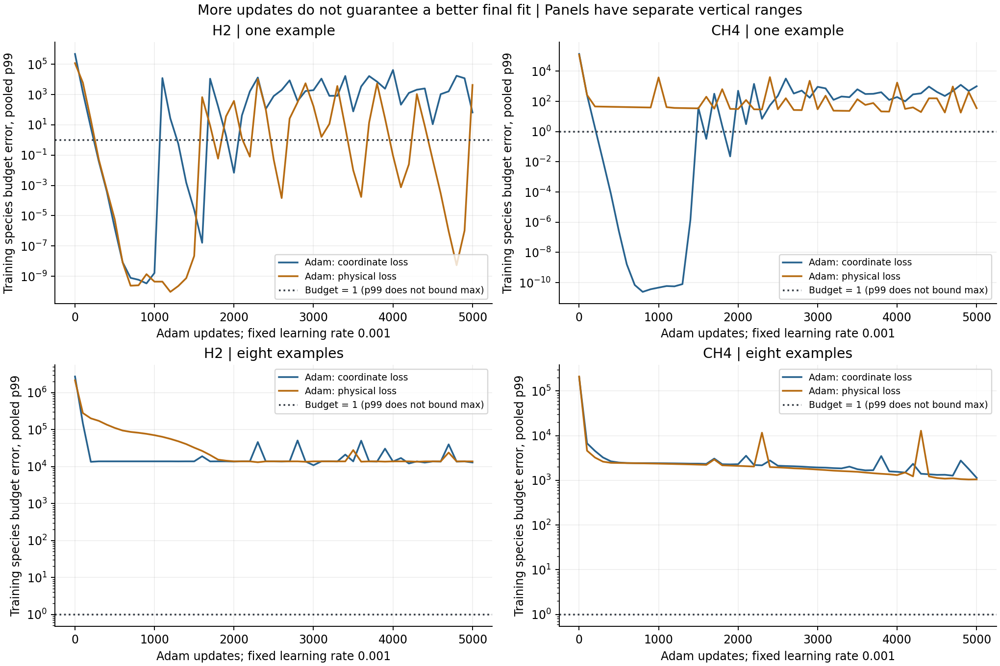

Checkpoint 03 follow-up. All fitting ran on lh40902. This is a training-data diagnosis, not a new test of unseen states.
Main result: 4 of 4 direct linear-head controls meet every physical budget.
0 of 12 Adam fits meet every budget at the fixed final checkpoint of 5,000 updates.
Three one-example Adam runs briefly meet the species budgets, then lose that accuracy.
The narrow examples can be represented, but the tested training procedure does not reliably keep an accurate fit.
A loss change alone does not solve the problem.
Step 1 — Reproduce the problem
We loaded the previous H2 budget-linear FP64 model and asked it to predict the first training example again.
The largest species error was 2.146 million times its budget. The read-only fit_probe.py --row 0 check returned failure.
This showed that poor results were not limited to new, unseen states.
Why this matters: before asking whether the model generalizes, first check whether the fitting method can reproduce known answers.
A failed scientific accuracy threshold does not, by itself, identify a software defect.
Step 2 — Use checked answers, without new chemistry solves
We reused the accepted checkpoint 03 reference data. Cantera/CVODES had supplied the starting states.
SciPy Radau had integrated the changes directly, with the reference-agreement checks described in the earlier reports.
Neither solver generated new labels in this diagnosis. These labels remain working references, not exact mathematical truth.
For each mechanism, we used one example, eight examples, and all training examples (H2: 133; CH4: 144).
The eight examples come from the 1400 K training parent, at eight time anchors, with interval h = 1e-6 s.
The one-example set is its first anchor. A 1400 K parent does not mean the temperature stays at 1400 K during reaction.
We did not use validation or test rows. Scales use only the original training split, and stay fixed across subsets.
The old test set has already been reviewed; it must not silently become a tuning set.
Step 3 — Separate three questions
Loss weighting: for the same subset and model, compare the existing normalized-coordinate loss with physical-budget loss.
Training duration: compare fixed checkpoints at 200 and 5,000 updates in each run. Do not select the best intermediate result.
Range of examples: compare one, eight and all training rows. This changes the task, so it is a separate probe.
All fits use budget-linear outputs, FP64, two 64-unit tanh layers, seed 20261008, Adam at learning rate 0.001, and full batches.
The same mechanism starts from the same weights in every run. The original 200-update study selected an epoch using validation;
these fixed final checkpoints are not a direct replacement for those selected-model scores.
What the two losses mean: the existing loss divides each output by its typical training magnitude.
It asks for similar accuracy relative to that typical magnitude. The physical loss instead gives equal weight to equal fractions of the specified error budgets.
We divide that physical loss by one global training-only constant to keep the numbers manageable. Relative weights stay unchanged;
Adam's effective epsilon can still change. Both losses include temperature and active species outputs.
Neither loss directly minimizes the worst error or p99. Average error can improve while more small components leave their budgets.
Step 4 — Read the measured errors
Species budget: 1e-12 + 1e-6 * abs(Y_initial). Temperature budget: 1e-6 + 1e-8 * abs(T_initial).
Divide absolute error by its budget. A value of 1 is the limit. The strict pass requires every component to be at or below 1.
Mechanism
Subset / rows
Loss
Species p99 at 200
Species p99 at 5,000
Species RMS at 5,000
Species above budget
Max: T and species
H2
one / 1
coordinate
6.6625
65.905
25.283
40.0%
125.68
H2
one / 1
physical-budget
21.291
4316.3
1860.6
80.0%
31250
H2
narrow / 8
coordinate
13498
12977
2626.8
80.0%
15434
H2
narrow / 8
physical-budget
2.0225e+05
13847
2318.9
77.5%
13882
H2
all / 133
coordinate
5.4885e+06
1.5421e+05
39887
79.9%
6.5011e+05
H2
all / 133
physical-budget
7.8698e+06
1.5673e+05
35590
80.0%
4.2932e+05
CH4
one / 1
coordinate
1.7922
1003.3
245.34
69.8%
1498.9
CH4
one / 1
physical-budget
45.927
35.5
7.9022
43.4%
41.46
CH4
narrow / 8
coordinate
4548.3
1139.2
368.03
62.5%
5509.3
CH4
narrow / 8
physical-budget
3237.9
1050.7
327.27
85.6%
4845.8
CH4
all / 144
coordinate
8.5894e+05
21850
9918.1
80.6%
3.5812e+05
CH4
all / 144
physical-budget
7.6871e+05
14754
5491.1
93.7%
1.6589e+05
Species p99 pools every species component in the selected rows. H2 has 10 species; CH4 has 53.
For example, the eight-row sets contain 80 and 424 species errors. Temperature is not in species p99; it is in the all-component maximum.
What changed: more updates greatly reduce the full-set error, but do not reach the budgets.
For CH4 on all training rows, physical loss reduces final species p99 from about 21,850 to 14,754 budgets.
However, the fraction above budget rises from about 81% to 94%. For H2, physical loss slightly worsens p99.
These results do not support a universal loss winner.

Important limit: the one-example coordinate fits finish worse at 5,000 updates than at 200.
These curves show that more updates at a fixed step size are not a reliable route to high accuracy.
They do not, on their own, identify which optimizer setting should replace it.
Mechanism
One-example loss
Lowest recorded species max: update
Species max / budget
H2
coordinate
900
3.6644e-10
H2
physical-budget
1200
9.4299e-11
CH4
coordinate
800
3.1433e-11
CH4
physical-budget
4800
30.99
Three one-example runs briefly bring every species error within budget, then move out again.
This is a post-run diagnosis of the recorded curve, not a new selected-model result.
Intermediate temperature maxima and model weights were not saved, so those points cannot be called complete passes or replayed.
Final weights and both prescribed full-score checkpoints are retained. A future stopping rule must check all components and save the passing weights.
Step 5 — Check representation and implementation separately
For the one/eight-row controls, we kept the hidden layers at their initial weights.
We then solved the final linear layer directly by SVD least squares. This is like fitting coefficients to known answers,
without thousands of gradient updates. It uses the same model shape and the same input/output scales.
Mechanism
Subset / rows
Feature rank
Condition number
Max: T and species
Within budget?
H2
one / 1
1
1
2.647e-11
yes
H2
narrow / 8
8
64701
1.2619e-07
yes
CH4
one / 1
1
1
9.9262e-12
yes
CH4
narrow / 8
8
2.324e+05
7.7866e-09
yes
All four controls meet the budgets. The eight-row feature matrices have full row rank.
This is evidence that the model can fit these particular narrow sets. It is not evidence that the model predicts new states well.
The condition numbers warn that the solve can be sensitive; this is not a recommended general-purpose chemistry surrogate.
We also encoded, normalized and decoded the exact labels, without a learned model:
Mechanism
Encode-normalize-decode maximum / budget
H2
1.7559e-08
CH4
1.6941e-09
The resulting errors are far below budget. Tests check that the physical-loss value and gradient match the direct budget-error formula.
Saved-model replay checks the final predictions and recomputes the scores. No scaling/reconstruction defect was found in these checks.
Step 6 — Decide what to do next
Supported: training procedure and loss weighting matter. The current fixed-rate Adam setup is not accurate enough,
at its final checkpoint, even when the small model can represent the examples. Some accurate species fits are lost with continued updates.
There is no demonstrated approximation ceiling on the eight-row sets.
Not supported: a useful chemistry surrogate, many correct relative digits for all tiny increments,
a robust winner among representations, or a reason to add residual stages now. Only one seed and one narrow parent were checked.
Recommended next test: keep these same training-only sets and test a bounded optimizer-polishing stage
(for example, a decreasing step size or L-BFGS), with a predeclared all-component stopping rule and saved passing weights.
First establish repeatable training fit.
Then use additional, predeclared parent trajectories and seeds to test generalization. Do not run a broad search, full grid,
residual stack or full trajectory rollout yet.
Reproduction and cost
The 12 Adam fits and four head controls took 59.74 seconds in a one-CPU, 4-GB, offline container on lh40902.
This is runner wall time, not a timing comparison between learning algorithms. The kernel did not support a separate swap limit.
Raw arrays, scales, predictions and weights remain under runs/representation/fit-diagnostic-20261008 in the server project.